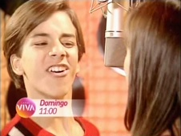
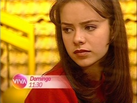

Sandy & Junior
| reprisado de | 19/05/2010 a 27/12/2011 (1º ciclo) |
|---|---|
| em 174 episódios e 1 especial | |
| frequência | segunda-feira a sexta-feira |
| faixa | uma e meia da tarde |
| horário alternativo | seg a sex, 8h30 |
Série infantojuvenil na qual a dupla de cantores convive com os dilemas e sonhos da adolescência junto aos amigos do ambiente escolar, exibida originalmente aos domingos, no começo da tarde. Os episódios também eram compostos de apresentações musicais e videoclipes. As 3 primeiras temporadas da série compreendem os 3 anos de colegial; na 4ª e última temporada, parte do elenco é renovado, e a série passa a acompanhar o 1º ano de faculdade dos irmãos.
Sandy & Junior foi o segundo programa de cunho infantojuvenil a ser exibido no Viva, e estreou às oito e meia da manhã 19/05/2010, quarta-feira. Na grade inicial, esse tipo de conteúdo ocupava uma sequência matutina, que, para além de Sandy & Junior, exibia Sítio do Picapau Amarelo e Malhação, sem horários alternativos. Em agosto de 2010, a edição do dia de Mais Você, que tinha dois horários no Viva (13h a 14h30 e 18h a 19h30) perdeu o trecho do início da tarde. Assim, escalou-se a sequência Sítio do Picapau Amarelo / Sandy & Junior / Malhação para 13h, 13h30 e 14h, respectivamente. O horário da manhã não foi descontinuado: tornou-se alternativo.
A contagem original da série considera uma exibição compacta do Show 4 Estações, em 07/01/2001, como parte do programa, sendo esse o 90º episódio da série. O Viva o apresentou normalmente.
No mês de outubro de 2010, o Viva realizou uma série de mudanças na estrutura original de sua grade. Sandy & Junior permaneceu no ar, mas mudou de dia e horário e saiu de frequência diária para semanal: aos domingos, às 11h, sem horário alternativo. De certa forma, o que houve foi uma troca com Caça Talentos, que era exibido aos sábados e domingos, às 8h, e a partir dali assumiu às 8h30 de segunda-feira a sexta-feira.
Só a partir de março de 2011, Sandy & Junior ganhou um horário alternativo: também aos domingos, mas mais tarde, às 17h30. Em outubro, Sandy & Junior teve seu horário principal atrasado para 11h30, uma vez que o Viva acomodou horários alternativos para séries infantis reprisadas aos finais de semana no mês das crianças. O alternativo das 17h30 de domingo foi extinto, indo para às 10h de sábado. Mesmo com o fim da programação especial em novembro, tanto a exibição principal quanto a alternativa permaneceram nesses novos horários.
Pouco depois, Sandy & Junior recuperou a frequência de segunda-feira a sexta-feira. A partir de 04/12/2011, angariou o horário das 14h30, logo após o capítulo do dia de Malhação, substituindo a série canadense Sophie; por conseguinte, também apresentava alternativo às 9h30 no dia seguinte à exibição principal. Em 27/12/2011, terça-feira, enfim findou seu 1º ciclo. No dia seguinte, seguiu no ar, desde o 1º episódio.
Em abril de 2012, com Armação Ilimitada substituindo Sítio do Picapau Amarelo às 13h, o Viva teve de retardar em meia hora as atrações subsequentes: Caça Talentos foi para às 14h; Malhação, para às 14h30; Sandy & Junior, para às 15h. Assim, o programa passou a anteceder a sequência vespertina de novelas do canal, que iniciava às 15h30, com Top Model. O horário alternativo também foi alterado, indo para 10h.
Sandy & Junior teve mais 2 ciclos completos nessa frequência diária, até 23/04/2013, uma terça-feira. Em 24/04, seu horário deu lugar a um bloco vespertino da faixa Viva Rindo, com a exibição de uma série cômica a cada dia da semana: Minha Nada Mole Vida, às segundas-feiras; O Belo e as Feras, às terças-feiras; Sob Nova Direção, às quartas-feiras; Faça Sua História, às quintas-feiras; e Dicas de um Sedutor, às sextas-feiras.
Em 16/02/2015, substituindo Flora Encantada, Sandy & Junior voltou a ser exibido ao meio-dia e meia, antecedendo o capítulo do dia de Malhação. A exibição alternativa era às oito e meia da manhã do dia seguinte. A partir de 20/06/2016, com o fim do 2º ciclo neste horário (o 5º, no total de exibições), a série foi remanejada para às 11h, e o horário de 12h30 passou a ser alternativo de Malhação (fazendo sequência com o capítulo do dia, às 13h).
Após transitar por diversos horários da manhã, Sandy & Junior deixou de ser exibido pelo Viva no 1º trimestre de 2021.
Em 17/12/2015, quinta-feira, como parte de sua programação especial de fim de ano, o Viva apresentou o Show Sandy & Junior no Maracanã (exibido originalmente em 12/10/2002) às 21h. Em 08/10/2016, sábado, o show foi exibido mais uma vez, às 19h. Mais uma chance em 16/03/2019, sábado, às 19h30.
O piloto da série, um especial de fim de ano exibido em 27/12/1998, nunca foi reprisado.
chamadas
Quando o Viva estreou, todos os programas de sua faixa infantojuvenil eram anunciados em uma mesma chamada. "Você conhece a pílula falante? Sabe o que significa dig-dig-joy dig-joy-popoy? E lembra do Perereca e sua turma? Então, o seu lugar é aqui no Viva! De segunda a sexta, a partir das oito da manhã: Sítio do Picapau Amarelo, Sandy & Junior e Malhação."

Em agosto, a mesma chamada foi atualizada com os novos horários principais das atrações.

Uma chamada própria passou a se fazer presente com o novo horário: "De segunda a sexta, tire os pés do chão, porque Sandy e Junior estão na área! Para responder a uma pergunta que não quer calar: 'que c'ocê foi fazer no mato, Maria Chiquinha?'. De segunda a sexta, uma e meia da tarde, Sandy & Junior."
Em outubro de 2010, com a mudança de dia e horário, Sandy & Junior ganhou uma nova chamada no Viva: "Entre uma aula e outra, essa duplinha apronta as maiores confusões. E quem ficar de fora das aventuras de Sandy & Junior, vai ter que rebolar! Todo domingo, onze da manhã: Sandy & Junior."
"Você que pediu e até protestou, pode comemorar, porque todo domingo, eles estão no Viva!", anunciava a chamada exibida a partir de janeiro de 2011.
- 
Em março de 2011, uma chamada destacava o horário alternativo do programa: "Está rolando um boato no Viva. Você já está sabendo? Atendendo a pedidos, Sandy & Junior ganhou mais um horário na nossa programação. Pode acreditar! Sandy & Junior: todo domingo, onze da manhã, e agora também cinco e meia da tarde."
Com a mudança de horário, em outubro, o programa ganhou uma nova chamada: "Quando ela era comportadinha, boa menina e dormia cedo... essa escola não parava nenhum minuto! Todo mundo tem o seu lado nostálgico no Viva... todo domingo, onze e meia da manhã, Sandy & Junior."
- 
Com o retorno à frequência diária, em dezembro, o mesmo texto foi utilizado em uma chamada com cenas diferentes dos mesmos episódios utilizados na anterior.